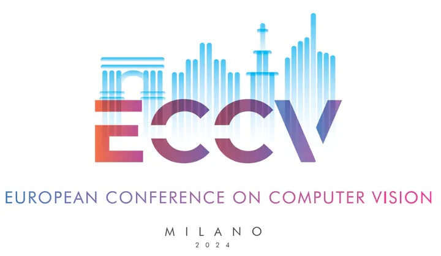

ECCV 2024 Tutorial:
Time is precious: Self-Supervised Learning Beyond Images

Overview
Self-supervised learning (SSL) is a powerful technique that's been able to reach the same levels of performance as supervised pretraining, thanks to its ability to work with billions of images. Existing image-based self-supervised methods focus on learning representations that are invariant to synthetic augmentations, addressing key image aspects like scale, color, and translation invariance. These factors represent only a fraction of the intricate variations in pose, viewpoint, and motion found naturally in videos, which contain more nuanced and informative signals.
In this tutorial, we discuss a shift from traditional augmentation invariance strategies prevalent in image-based SSL to a more dynamic utilization of video data. We discuss multiple techniques that leverage the rich temporal signals in videos through a dual focus on the spatial details within each frame and the changes occurring between them. Our tutorial presents a forward-looking perspective on incorporating temporal information to improve SSL algorithms, representing an paradigm shift in SSL.
Speakers

INRIA
University of Amsterdam
University of Amsterdam

Google DeepMind
GenAI, Meta
Rice University
Schedule
| Title | Speaker | Time (CST) |
|---|---|---|
| Part (1): Introduction to SSL from videos Introduction and related works |
Shashanka & Mohammadreza | tbu |
| Coffee Break |
tbu | |
| Part (2): SSL from videos Tuning DINO with videos, 1-video pretraining, tracking image-patches |
Yuki M. Asano | tbu |
| Invited talk: Learning from one continous stream |
João Carreira | tbu |
| Coffee Break |
tbu | |
| Invited talk: Text-to-Video Generation |
Ishan Misra | tbu |
| Invited talk: SSL through the eyes of a child |
Emin Orhan | tbu |
About Us
Shashanka is a final year PhD student at the LinkMedia team in INRIA, France, advised by Yannis Avrithis. He conducts research on the topic on self-supervised learning, specifically on learning image representation from videos and data-augmentation methods. He has organized several deep learning workshop focusing on a broad range of topics including diffusion models, RAG, backdoor attacks etc. in his university.
Mohammadreza is a third year PhD student at the QUVA lab, University of Amsterdam advised by Yuki Asano, Cees Snoek, and Efstratios Gavves. His research focuses on representation learning, with a special emphasis on learning image representations from videos. In addition to his primary research, he is also deeply engaged in the field of machine learning safety, working towards ensuring that AI systems are reliable and safe for society.
Yuki M. Asano is an assistant professor at the Video & Image Sense (VIS) Lab at the University of Amsterdam and leads the Qualcomm-UvA (QUVA) lab. He conducts research on the topic on self-supervised learning, multi-modal learning and augmentations, which has resulted in works such as GDT, SSB, SeLa or single-image pretraining and most recently the self-supervised learning from videos such as TimeTuning and DoRA. He has served as Area Chair for CVPR 22-24, ICLR 2023 and NeurIPS 2022. He has also organized several workshops such as SSLWIN in ECCV 2020, ECCV 2022, BigMAC in ICCV 2023.